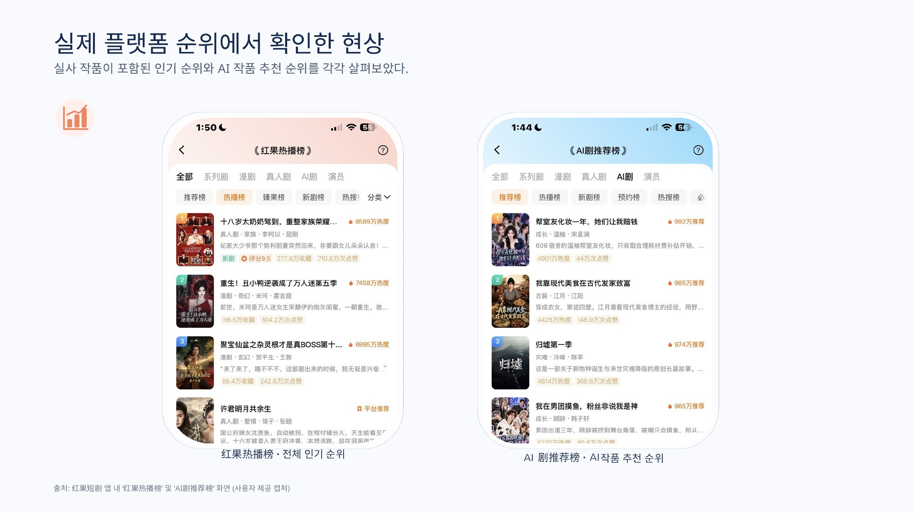

연구
현상과 질문
‘AI 생성’ 표시가 붙어 있어도 사람들은 본다. 이 현상에서 출발해 연구 문제 두 가지와 잠정적 주장을 세웠습니다.
‘AI 생성’ 표시가 붙어 있어도, 사람들은 본다
화면 아래에는 늘 ‘作品由AI生成(AI로 생성된 작품)’이 떠 있고, 등장인물의 얼굴도 서로 비슷해 보입니다. 그런데도 AI 숏드라마는 많은 시청자를 모읍니다. 우리 조는 이 현상에서 출발했습니다.
표시가 있어도, 얼굴이 닮아도 본다
‘AI 생성(作品由AI生成)’ 표시가 붙어 있고 등장인물의 얼굴도 서로 비슷해 보이지만, AI 숏드라마는 여전히 많은 시청자를 모읍니다.
실사와 같은 순위표에서 경쟁한다
실사 숏드라마와 AI 숏드라마가 같은 플랫폼(红果短剧) 순위에서 경쟁하고, AI 작품이 상위권을 차지합니다.
숫자로 본 규모
순위표에서 직접 확인한 것
- 2026년 4월 红果는 실사와 AI 작품을 같은 순위표에 올렸고, 직후 AI작 《菩提临世真人AI版》이 1위에 올랐습니다. (蓝鲸财经)
- 红果 웹 통합 热播榜(10월 23일 갱신본)에서 기준작 《一双手闯出一片天》은 18위(열도 5,942만)였고, 같은 표 상위 20편 안에 持械入宋, 大唐憨婿 같은 AI작이 실사작과 섞여 있었습니다. (红果热播榜)
- 최근 반년 동안 红果 총 열도 상위 10위에 들어간 실사작은 《十八岁太奶奶驾到 5》 하나뿐이었다는 보도가 있습니다. (澎湃, 2026.11.9)
열도(热度)는 조회수가 아니고 날마다 바뀌는 값이라, 이 전시의 모든 지표는 조회 날짜를 함께 적었습니다.


인기 AI 숏드라마의 매력은 어디에 있을까?
연구 주제: 사람들은 왜 AI 숏드라마에 열광하는가? 중국 AI 숏드라마의 인기 요인과 문화적 의미
왜 이 주제를 선택했는가
AI는 제작비와 인력을 크게 줄입니다. 실사 30~40만 위안, 스태프 약 40명이 들던 작품을 AI는 10만 위안 미만, 10명 미만으로 만듭니다. 값싸게 복제하기 쉬운 것은 이미 검증된 공식이고, 반응 데이터가 그 공식을 다시 강화합니다.
제작비: Caixin, 2026.6.1
红果 월간 이용자는 3.57억 명입니다. 이만큼 많은 사람이 반응하는 장면에는 지금 사람들이 원하는 이야기, 곧 동시대의 욕망이 담겨 있습니다.
2026년 1분기 신규 숏드라마의 95% 이상이 AI지만, 히트율은 0.1% 미만입니다. 그래서 “왜 AI 숏드라마인가”보다 “어떤 AI 숏드라마가 왜 선택받는가”를 물을 이유가 생깁니다.
1주차 발표의 “연구의 필요성”을 출처가 확인된 자료로 다시 정리했습니다.
연구 문제 두 가지는 이렇게 이어집니다
인기 AI 숏드라마의 서사, 시각적 특징은 어떻게 나타나며 실사와 무엇이 다른가?
기준작을 장면 단위로 기록하고 비교작 4편과 대조해 특징을 찾습니다.
작품 · 분석에서 확인그 특징은 시청자의 정서적 만족과 새로운 관람 경험에 어떤 의미인가?
찾은 특징을 연구, 업계 자료, 플랫폼 맥락에 비추어 의미를 해석합니다.
근거에서 확인문제 ①이 “실사와 무엇이 다른가”를 밝히면, 문제 ②는 “그 차이가 시청자에게 무엇을 주는가”를 묻습니다. ①의 답(앞당겨진 갈등과 반격, 실사로 어려운 볼거리)이 ②의 재료가 되고, 두 답이 모여 아래의 잠정적 주장이 됩니다.
인기 AI 숏드라마는 기존 숏폼의 정서적 만족을 계승하면서, AI가 구현하는 새로운 시각적 경험을 결합한다.
지난 발표의 한계를 어떻게 보완했는가?
빠른 갈등 + 즉각적 보상
- 인기 요인을 넓게 나열
- 실사 숏드라마와 공통된 특징
- 실제 작품, 시청 근거가 부족
구체적 작품 + 비교 + 해석
- 《一双手闯出一片天》 중심 분석
- 《莞城往事》, 실사작과 비교
- 《持械入宋》으로 AI 볼거리 검토
막연한 인기 설명 → 장면과 자료가 뒷받침하는 하나의 주장
지금까지는 흔하게 결론 및 생각해 볼 수 있는 정도이고 결론이 넓게 나올 가능성이 있다. 구체적인 작품을 선정해서 보충할 필요가 있다.
2주차(Task 2) 교수님 피드백 · 3주차 연구의 출발점
연구의 흐름 (발표 3회)
- 1주차 (11.2) Mission 1 주제 발표
질문 설정, 연구 중점 3가지 (획일화, AI의 변화, 시청 이유) - 2주차 (11.9) Task 2 연구 구상
연구 문제 2개와 잠정적 주장 확정 - 3주차 (11.16) Mission 3 연구의 논거
기준작 + 비교작으로 근거 ①②③ 연결
이 전시를 읽는 방법
교수님의 논증 형식은 자료 → 해석 → 논거 → 주장입니다. 근거는 세 갈래로 찾고 서로 연결합니다. 장면을 캡처하거나 논문을 찾은 것은 아직 자료이고, 그것이 주장을 어떻게 받치는지 설명해야 논거가 됩니다.